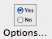
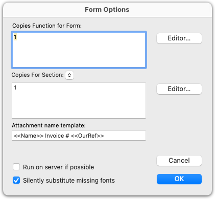
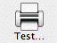
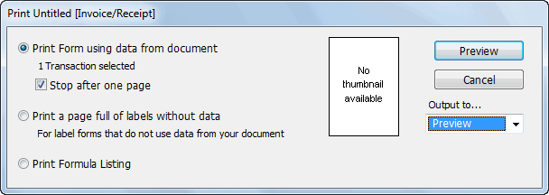
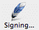
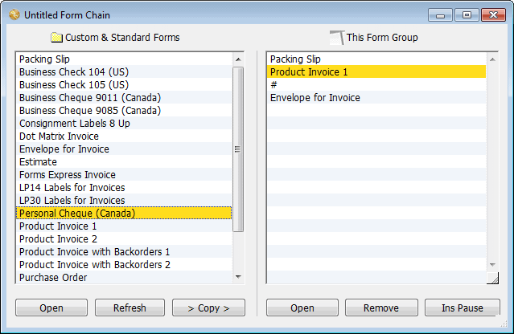
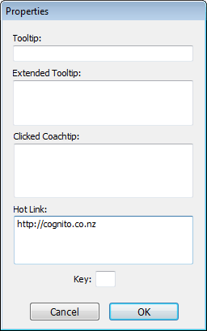
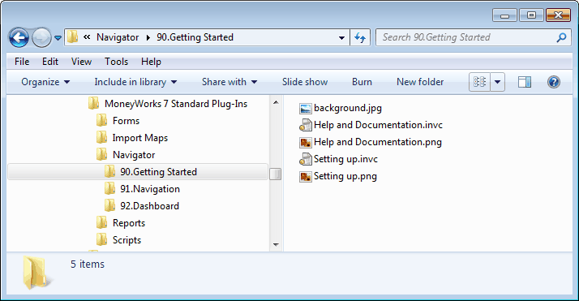
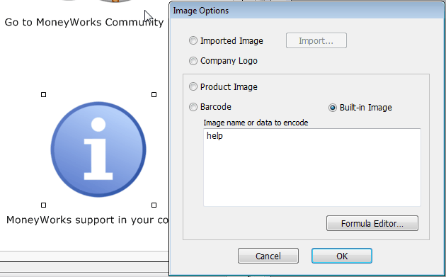

Form options take effect when the form is printed. These are set in the Form Options window.

Click on the Options toolbar button or ChooseChoose the desired alignment command from the Arrange sub-menu or click the corresponding alignment tool palette button
Examples:
The Options button
|
|
|
|---|---|---|
|
|
|

The Copies Function: The Copies Function determines how many copies of the form will be printed, and is normally simply the number 1. This means that one copy of the form will be printed for each record that you cause to be printed from MoneyWorks. If it is zero, no form is printedThe copies function need not be a number. It can be a calculation just like any other calculation in a form. It is evaluated before the form is printed for each record that is to be printed using the form.
Note: The number of copies to be printed is also affected by the settings in the Print Job dialog box when you come to print the form. The number specified here is in effect multiplied by that of the Copies Function in the form itself to give the number of forms actually printed. Therefore, as a rule of thumb, the number of copies should be built into the form itself, and not in the print dialog.
Example 1: Your company produces two kinds of invoices: one for services and one for products. The forms are completely different but you do not want to have to choose the correct form every time you print an invoice.
One solution is to create a Form Group — see Printing Multiple Forms) containing the two forms. The copies function of each form is set up to evaluate to 1 if the invoice is of the type relevant to the form and zero if not. The result is that only the correct form will print, no matter what the invoice type.
The copies function to use to achieve this for a product invoice are:
If(Length(Concat(ExpandDetail("Detail.StockCode"))) > 0, 1, 0)
and for the service invoice:
Example 2: A manufacturing company needs to produce a label for each product that it produces in a batch. The number of products in a batch (and hence the number of labels required) varies for each product, and is stored in the NormalBuildQty field of the Product record. By using a product label form with a copies function of:
Product.NormalBuildQty
the required number of copies of each label will be printed when the Print Product Labels command in the Command menu is used.
Important: The Copies function is entirely independent of the Copies box in the Print job dialog box that you get when you print. The Copies box allows you to print multiple copies of each page of a document. The Copies function for a form lets you print multiple copies of a Form. For labels in particular, the number of pages and the number of forms printed is not necessarily the same.
This determines the number of copies that will be printed for the section selected in the pop-up menu. Each section can have its own copies function, allowing you to skip sections if certain conditions are meet.
Note that this is subservient to the form Copies statement—if this is set to 0 you will get no sections printed, regardless of the value of the Section function.
If(Length(Concat(ExpandDetail("Detail.StockCode"))) = 0, 1, 0)
These functions work by testing the length of the text string formed by concatenating all the product codes in the invoice detail lines. If the resulting text string is empty, then there are no product codes, which implies that the invoice is a service invoice.
Attachment Name template:
In MoneyWorks 9.1.7 and later, you can specify the name that MoneyWorks should (try to) use when creating PDF attachments for emailing. The template can include expressions in double angle brackets. Don't include
.pdf in the name; that will be added automatically. You can leave this blank and MoneyWorks will choose a default name depending on the type of form (or transaction) being PDFed.
Example for an invoice form: <<Name>> Invoice <<OurRef>> will give e.g.
Acme Widgets Invoice 10123.pdf
Another solution is to create a single invoice form with two (or more) sections. The first section could be laid out for services, and the second for products. The above formulas could then be placed in the relelvant Section function to determine which section was appropriate to print.
Example for a statement form: Statement for account <<Name.Code>>
will give e.g. Statement for account SMITH
Require Confirmation after Printing: If you are designing cheque stationery, you will want MoneyWorks to confirm that the cheque print run was completed correctly — see Printing Cheques. Setting this check box (which is only available for cheque/remittance forms) causes the Cheque Confirmation dialog box to be displayed after the form is printed
Silently substitute missing fonts: If set, and the form uses fonts that are not installed on your computer, alternative fonts will be used with no warning.
While you are designing the form, you will want to try printing it to check page alignment and to see how it looks. You can print off the form layout, or, by highlighting representative sample records in the source file, use actual test data to see how the form will operate in practice.
To print a form from the Forms Designer:

Click the Test Toolbar button or Choose File>PrintPrint Form using data from document: The form will be printed using the highlighted records in the source file appropriate to the type of the form. If the source file is not open or has no highlighted records, MoneyWorks will select all records in the file. If there are no records to provide data for printing, this option will be disabled. The number of records to be printed is shown in the window.
Stop after one page: This option restricts printing to one page only, and is on by default. You should leave this option on if you have not highlighted any records from the source file to use to test your form (otherwise it will print every record in the source file).
Note: Printing actual data will expose any logical errors you have made in your form—such errors will be displayed in a dialog box showing the errors and object numbers concerned. You should correct the errors before using the form — see a list of errors.
Print a page full of labels: Use this for printing labels that are all the same and do not include any information from MoneyWorks (disk labels for example). Enough copies of the form are printed to fill one page.
The Test Form Printing windows will be displayed.

The Test toolbar icon
It may be that you do not want everyone to be able to use the form you have created. For example, a cheque form should only be able to be printed by authorised personnel. The signing mechanism in MoneyWorks allows specific forms (and reports) to be “signed”, and for only signed users to be able to access them. To sign the form:

The signing window will be displayed.
The options on this are:
Print Form Layout with Formulae: The form is printed as it appears in the designer (with the fields outlined), with the objects and their formulæ listed on subsequent pages.
For more information on this see Protecting Reports and Forms by Signing.
The Signing toolbar icon
Multiple forms can be printed at one time by creating a Form Group—this is basically a list of forms to print in a single operation. As an example, you may want to print customer invoices together with envelopes to put them in, or maybe you laser-print your invoices for your customers and for some odd reason print your own copy on a dot matrix printer. You may even have different invoice forms to use depending on the type of customer—this can be accomplished by a combination of a form group and use of the Copies function.
To create a multi-page form group:
The New Custom Form window will be displayed.
Set the Form Type to the type of form (e.g. Invoice/Receipt), set the Multi- Page Form Group option, then click OK
The Form Chain window will be displayed

This contains a list of available forms of the required type. The forms that will be printed when we use this form group are listed in the right hand column. For new groups this will be empty.
Repeat with the other forms that are to be printed
The above group will print packing slips and invoices, then it will pause so that envelopes can be loaded into the printer, and then it will print these.
All of a component form is printed first, before any of the next form in the list are printed. Thus in the example above, packing slips are printed for all the highlighted transactions, then invoices, then (after a pause) envelopes.
To change the order of printing: Drag a form (in the right hand list) up or down.
The forms at the top of the list will print first.
To pause in a print run: Click the Ins Pause button to insert a pause. Use this when you need to change stationery.
To remove a form: Highlight the form (in the right hand list) and click the
Remove button. The form will be removed from the list.
To edit a form: Highlight the form and click the Open button under that list.
You will be prompted for a name of the group.
You can embed a URL into a form or report which, when clicked in the Preview window or (more usefully) on a pdf of the form, will take you to a designated web site or create a new email in the recipient’s email program. (Note that on Windows, embedding links in PDFs does not work if you use the MS Print to PDF option).
To add a hot link to an element on the form:
The properties window for the element will open.
="https://accounts.xyz.co/pay_invoice.php?invoice_&num="
+ourref+"&amount="+gross

Enter the URL into the Hot Link fieldYou can link to a website or other form of URL from the report. This will be active in the preview window or in a saved pdf. The entire hot link must constitute a valid URL. For example the following will link to a website in your default browser:
The following will create an email in your email program:
mailto:info@myemail.com?subject=Response to mailout
The hot link can be a formula, starting with an equals sign, that is calculated from other elements on the form (in fact if the URL is long, you will need to have a calculation here, as the length of what you can type in is limited). This means that the URL can be different for every form printed, for example each invoice could link to a payments page and automatically populate the payment amounts and invoice number on the page, as in this example:
which links to a (hypothetical) payment site and populates the invoice_num and amount fields on the payment page with the invoice number (ourref) and amount (gross) from the MoneyWorks invoice transaction.
Hot links are used extensively in the MoneyWorks Navigator (see next section), the layout of which was done entirely in the Forms Designer (and hence can be customised if desired).
Tip: If your hotlink formula gets too long, split it into components by calculating sections of it in invisible calculation fields, e.g.
URL="https://accounts.xyz.co/pay_invoice.php" params = "?invoice_&num="+ourref+"&amount="+gross hotlink = URL + params
Customising the Navigator
The MoneyWorks Navigator consists of a set of forms4 kept in the Navigator folder of the MoneyWorks Standard Plug-ins. If, when you open or connect to a MoneyWorks document, MoneyWorks detects a Navigator folder in the Custom Plug-ins folder, it will use that folder instead of the one in the Standard Plug-ins.

The easiest way to build you own custom Navigator is to alter a copy of the standard one that comes with MoneyWorks5. The first step then is to put a copy of the Navigator folder in the Standard Plug-ins into the Custom Plug-ins folder, which you do in Windows Explorer or the Mac Finder (to locate these folders, see Managing Your Plug-ins. The structure of your Navigator is determined by
the folders and panels (.invc files) in this Navigator folder.
Note: After doing this copy, or making any other structural change to the Navigator such as adding or removing a folder or file, you will need to close and re-open your MoneyWorks document for the changes to take effect
The form will open in the MoneyWorks Forms Designer. Make any changes and save the form. Note that you will need to refresh the panel to see any changes (do this by moving to a different panel, then back to the changed one).
When building or modifying a Navigator panel, you can use all the tools of the Forms Designer;
Avoid computationally heavy calculations, as they will make the Navigator sluggish;
Copy and paste the elements off the standard navigator panels to replicate them in yours;
Text and graphic elements can be conditionally visible, so that they only appear if certain condition are met;
To view or modify an element’s hot link), hold down the ctrl key (Windows) or the option key (Mac) and double click the element;
You can paste your own graphics onto the form, or use the ones built-in to MoneyWorks. The latter are accessible by the Built-in setting in the Image options (double click the required image in the standard Navigator to view the built-in name);

If you want to deploy your Navigator to users who do not have the privilege Signing and Using Unsigned Forms and Reports, you will need to sign each Navigator panel to them — see Protecting Reports and Forms by Signing;
Folders and panels are displayed in the Navigator alphabetically by file name. If the file/folder name is prefixed by a number of the form “99.”, this is removed from the MoneyWorks display, allowing you to order the Navigator as you wish;
You can have an optional icon appear next to your panel name by including a png file with the same file name as that of the panel (except for the extension).
1 As a shortcut, hold down the Ctrl key (Windows) or the option key (Mac). The Layout button changes to Edit, which, when clicked, will open the Forms window.↩︎
2 This differs from earlier versions where the origin was the top left of the form area.↩︎
3 For inserting product images in the list part of an invoice/quote, see Product Images in Lists↩︎
Calculations and things
4 Or in fact reports, as in the Dashboard section of the Navigator↩︎
5 If you alter the Standard Custom Plug-ins/Navigator folder directly, any changes made will be lost when MoneyWorks is updated↩︎
You use calculation formulæ in many different places in MoneyWorks:
In any text entry box (preceded by an “=”) for a quick calculation;
In Advanced Find;
In Advanced Replace;
In report Columns, Cells and Accumulator calculations;
In the If ... Else if report Parts;
In Form calculation and list boxes;
In Form Visibility, list search and copies functions;
From AppleScript, VBScript and Visual Basic.
This section describes how to write a formula. You can write formulæ using:
constants or values;
mathematical, relational (comparison), and logical operators;
built-in functions;
references to MoneyWorks fields (where in context);
references to the results of other calculations on the same form or report.
You combine these components into an algebraic expression using the standard infix notation that you learnt at school.
The simplest example of an expression is a simple constant, such as:
"A text string" 457.50 '21/2/68' #7000000
There are four different kinds of constants —string, numeric, date and hexadecimal constants. These are shown respectively above. Notice that a string constant must be enclosed in double quotation marks (or inch symbols), a date constant is enclosed in single quotation marks (or foot symbols), and a
hexadecimal constant starts with a # symbol. If the string constant were not enclosed in quotes, the expression parser would treat each word as if it were an identifier.
To include a character in a string constant which you could not otherwise include, you need to use an escape sequence. An escape sequence consists of a pair of characters made from the escape character \ (backslash), followed by the escape metacharacter for the character that you want. The metacharacters used by MoneyWorks are " (quote or inch symbol), t, n and \. Their use is shown in the table below:
| Character |
|
|
|---|---|---|
| quote |
|
|
| tab |
|
|
| newline |
|
|
| return |
|
|
| backslash |
|
|
As an example, to replace all commas in a string with newlines, you would use an expression such as:
Replace(theString, ",", "\n")
As well as the double quotation marks for delimiting strings, you can use the backquote, e.g.
Operators are symbols indicating how to combine two values or subexpressions. They include the standard arithmetic operators (+ [addition], - [subtraction], * [multiplication], / [division]); comparison operators (=, <>, <, >, etc...); logical (or Boolean) operators (And, Or, Not); and the parenthesis symbols for indicating precedence.
For example:
Transaction.Gross * 1.5
"Tax Invoice " + Transaction.OurRef
Transaction.DueDate - 5
Field names are used to include the value of a field in a MoneyWorks record (such as the description field of a transaction record). Identifiers can be used to include the result of another calculation, or the value of a global variable.
For example:
Transaction.Description
Replace(theString, `,`, "\n")
Detail.GST
Having two string delimiters means that you don’t have to use the escape sequence for expressions that involved embedded strings.
Note: Don't confuse the backquote ` with the apostrophe ' — the latter is used to delimit dates.
GSTNUM
Field names are usually of the form <file name>.<field name>. The transaction fields can also be used without the preceding file specifier. For example, OurRef instead of Transaction.OurRef. In the Advanced Find, the filename is implied, so is not specified.
The information entered into the company dialog box of MoneyWorks (such as company name and address details) is available for use in any calculation (these are also listed in Report Variables).
Additionally MoneyWorks includes a set of system variables allowing you to enquire about the computer on which you are running and the file that is open. The variables are reasonably self explanatory. Where the result is platform dependent (as in a file path), examples are given. Mac users should note that there are forms for returning HFS and POSIX paths
Variable Details/Results
Address1...Address4 the company postal address (in Show>Company
Details). Address4 holds the Country value
AgingCycle an integer representing the current aging cycle of transactions. It is incremented every time the Aging command is used.
ApplicationPath Mac: Macintosh HD:Applications:MoneyWorks Gold.app Win: C:\Program Files\ MoneyWorks Gold\ MoneyWorks Gold.exe
AppSerial Your 15 character serial number
AutomationFilesFolderPath Path to the default directory for writing files from scripts
BaseCurrency The base currency of file
BuildNumber The MoneyWorks build number
CacheFolderPath The directory used by File_Open to create "CACHE/" files
CoRegName The prefix for the company registration number(determined by locale, e.g. IRD in NZ, ACN in Australia, IRS in USA)
CurrentPer The current(i.e. most recently opened) period number
CustomPlugInsPath Mac: Macintosh
HD:Users:guru:Documents:MoneyWorks
Custom Plug-Ins
Win: C:\Users\Public\ Documents\ MoneyWorks Custom Plug-Ins
Delivery1...Delivery4 the company delivery address (in Show>Company Details)
DeliveryPostcode postcode of company delivery address (in Show>Company Details)
DeliveryState state of company delivery address (in
Show>Company Details) DetailDateColumnEnabled Is the Show Date Column preference turned on DocumentName Mac: Acme Widgets Gold.moneyworks
Win: Acme Widgets Gold.moneyworks
DocumentPath Mac: Macintosh
HD:Users:guru:Documents:Acme Widgets
Gold.moneyworks
Win: C:\Users\Public\ Documents\Acme Widgets Gold.moneyworks
DocUUID A unique identifier for the document (UUID)
Email general company email address (in Show>Company Details)
ExtendedJobCosting true if Job Costing is turned on.
Fax company fax (in Show>Company Details)
GSTCycleEndDate the date the current GS/VAT/TAX ends on
GSTCycleMonths the number of months in the current GST/VAT/TAX
GSTCycleNum the current GST/VAT/TAX Cycle number (incremented by GST/VAT/TAX report finalisation)
GSTExpensesInvoiceBasis True if GST/VAT/TAX reporting is set to invoice basis
for expenses
GSTGuideName The name of the GST/VAT/TAX guide report to us (determined by locale).
GSTIncomeInvoiceBasis True if GST/VAT/TAX reporting is set to invoice basis
for income
GstNum the company's GST/VAT/ABN number (in Show>Company Details)
GSTProcessingSuppressed true if no GST/VAT/TAX processing
GSTRegName the name of the GST/VAT/TAX registration (determined by locale)
Have_Logo true if a logo has been stored (in Show>Company Details)
Initials the initials of the current logged user.
LastAgedDebtors the date the debtors were last aged
LastBackup the date a backup was last taken (using File>Save a Backup)
LastStocktake the date of the last stocktake
Locale Indicates the software product, version/kind, and localisation (the first letter is a country indicator, which indicates the document locale). e.g. N9G
LocaleFriendlyName Mac: NZ
Win: NZ
LogFilePath Mac: /Users/guru/Library/Logs/ MoneyWorks_Gold.log
Win: C:\Users\Administrator\AppData\
Roaming\Cognito\MoneyWorks Gold\
MoneyWorks_Gold.log
Mobile the company's mobile contact (in Show>Company Details)
MultiCurrencyEnabled true is the multi-currency option is on
Name the company name (in Show>Company Details)
NavigatorActive True if the navigator window is frontmost
NetworkLatency for connected users, the network latency in milliseconds
PeriodNames a comma separated list of the period names.
PeriodsInYear the number of periods in the financial year
Phone the company's general phone number (in
StartupSequenceNumJob StartupSequenceNumJobSheet StartupSequenceNumName StartupSequenceNumProduct StartupSequenceNumTransaction StartupSequenceNumUser
HD:Applications:MoneyWorks Gold.app
Win: C:\Users\Administrator\AppData\
Roaming\Cognito\MoneyWorks Gold\
MoneyWorks 8 Standard Plug-Ins
The next sequence number for each of the files at the start of the session (i.e. file opened in single user mode, or client logged in). Can be used to implement session filters or reports. For example, SequenceNumber >= StartupSequenceNumTransaction would find all transactions entered since the current user logged in.
Show>Company Details)
Platform PlatformApplicationPath
PlatformDocumentPath1
PlatformPlugInsPathString
PlatformStandardPlugInsPath
Mac: Mac
Win: Windows
Mac: /Applications/MoneyWorks Gold.app
Win: C:\Program Files\MoneyWorks
Gold\MoneyWorks Gold.exe
Mac: /Users/guru/Documents/Acme Widgets Gold.moneyworks
Win: C:\Users\Public\Documents\Acme
Widgets Gold.moneyworks
Mac: /Users/guru/Documents/MoneyWorks Custom Plug-Ins
Win: C:\Users\Public\Documents\
MoneyWorks Custom Plug-Ins
Mac: /Users/guru/Library/Application
Support/Cognito/MoneyWorks Gold/
MoneyWorks 7 Standard Plug-Ins
Win: C:\Users\Administrator\AppData\
Roaming\Cognito\MoneyWorks Gold\
MoneyWorks 7 Standard Plug-Ins
PostCode (in Show>Company Details) preferredContactRole the last role(s) chosen when last emailing Print_Address true if the Print Address option is on the Logo
section of Show>Company Details
RegNum the company's IRD/ACN/IRS number (in Show>Company Details)
RemittanceMessage text to appear on invoices and statements for direct credit details (in Show>Company Details)
RemoteHost The name of the server the client is connected to SerialTrackingEnabled Is Serial Number Tracking turned on ServerMaxConcurrent For connected users, the maximum number of
permitted concurrent users
ServerRego The serial number of the MoneyWorks server
StandardPlugInsPath Mac: Macintosh
State the state/province of the postal address (in Show>Company Details)
stockLocationTracking true if stock location tracking is turned on
stocktakeLocation the current location for a stock take as selected in your product list toolbar Location icon
StocktakeModeActive true if a stock take has been started by not finalised
TaxName The name of the main tax (e.g. GST, HST, VAT -- locale dependent)
TaxName2 The name of the secondary tax (e.g. PST -- locale dependent)
UserMaxConcurrent The maximum number of users than can connect the MoneyWorks server at any one time
UserIsReadOnly user is logged in with read-only privileges
UserName The logged in name of the user
Version the version number of the MoneyWorks being used (e.g. 7.0)
WebURL the URL of your website; if this is a complete URL (i.e. includes the http://) it will be hot-linked to your website in pdf reports and forms(in Show>Company Details)
Reports have access to variables that give the environment of the report (the period for which it is being printed, the scope of the report etc). These are discussed in Report Variables.
When you print forms from MoneyWorks, you generally select the records for which the forms will be printed (these will normally be Transactions, but might be Names, Products or Jobs). As MoneyWorks prepares to print each form, any
other records directly related to the record for which the form is being printed will be selected automatically.
For each form type, there will be a selection of sub-records that are made available for inclusion in list boxes on the form. The field names for these sub- records can only be used in column calculations in a list. Fields from the principal record (the one that you nominated to be printed) are available for use in any calculation in the form.
The fields of subrecords are said to be out of the scope of a calculation box. If you use an unknown or out-of-scope field name in a calculation box, you will get an “Unknown Identifier” error when you print the form.
Lists normally refer to a “natural” related file that depends on the type of form—when you use a file that is not native to the form, the appropriate fields are brought into context for the list.
You can also access fields in related files (such as products or accounts) by using the Lookup function. For more information on individual fields, see Appendix A—Field Descriptions.
Invoice/Receipts: Fields from the Transactions file, the Transactions Details file and the Names file can be used on invoice/receipt forms.
The Transaction and Name fields can be used anywhere on the form. MoneyWorks will automatically select the Customer (or Supplier) related to an invoice/receipt. If the Name field in a cash transaction has not been filled in, these fields will be empty.
The Transaction Detail fields can be used in list columns. They can also be included as part of an expression string used as a parameter to the ExpandList or ExpandDetail functions in a calculation box.
Statements: These use fields from the Names and Transactions files.
The Name fields can be used anywhere on the form. The transaction fields can be used in list columns. They can also be included as part of an expression string used as a parameter to the ExpandList or ExpandDetail functions in a calculation box.
To determine the value of a transaction on a statement you should use the special pseudo-field Transaction.AccRecMove. This returns the amount that the transaction will have affected your accounts receivable. Transactions that reduce accounts receivable (such as a cash receipt or credit note) will have negative value in this field, whereas transactions that increase (such as an invoice) will have a positive value.
When printing a statement, MoneyWorks will select all of the posted transactions related to the debtor or creditor for inclusion in lists on the form. You may use the list search expression to exclude certain transactions if you wish (normally you will exclude transactions that are not in the current aging cycle).
Cheque/Remittances: Cheque and remittance advice forms are printed using the Creditors Cheque Run command2. In these forms you can use fields from the Transactions file and the Names file. In addition, there is a special cheque pseudo-file which contains cheque specific fields.
These are outlined in the table on the right, and correspond to the fields in the payment transactions that are created on completion of creditor payment processing
MoneyWorks will automatically select all creditor invoices (and any credit notes) applicable to each cheque. MoneyWorks will also select the creditor record related to the cheque. You can use the “Cheque” and Name fields in any calculation box. The Transaction fields can only be used in list column calculations (or with the ExpandList or ExpandDetail functions in a calculation box).
Product forms: Product forms are printed using the Print Product Labels command in the Command menu—this is only visible when the Products list is top-most. The fields available are those from the Products file plus those from the related Recipe file.
Job form fields: Job forms are printed using the Print Job Forms command in the Command menu—this is only visible when the Jobs list is top-most. All the fields from the Job file are available, as are fields giving related access to the Job Sheet Items.
Context free form fields: Context free forms have access to the global variables and the functions. Unlike other forms, they are invoked by selecting them from the Reports menu (and hence should be saved in your Reports folder, not your Forms folder). They are used for creating forms such as the BAS or GST Returns.
There are several environment variables for use in forms:
Variable Purpose
MESSAGE This is a text variable containing the text entered into the Message field in the settings dialog box displayed prior to printing invoices/receipts or statements.
PAGE This is the current page number of a multi-page form.
AGINGCYCLE This is an integer representing the current aging cycle of transactions. You can use this value to select transactions for inclusion in statements based on aging. Transactions entered after the last Age Debtor Balances will have an Aging value equal to the value of AGINGCYCLE. Transactions entered in the previous aging cycle will have an Aging value of (AGINGCYCLE - 1) and so on.
COPY This is the number of the current copy being printed, where the total number of copies being printed is determined by the Copies function.
Print_Copy 1 if Print "Copy" if Already Printed check box in the invoice printing dialog box is on AND the invoice has already been printed, otherwise zero.
Omit_Zero 1 or 0 depending on value of Omit Zero Balances check box in the statement printing dialog box in MoneyWorks.
Omit_Credit 1 or 0 depending on value of Omit Credit Balances check box in the statement printing dialog box in MoneyWorks.
Have_Logo 1 or 0 depending on whether the current document has a logo pasted in the Company Details dialog Box.